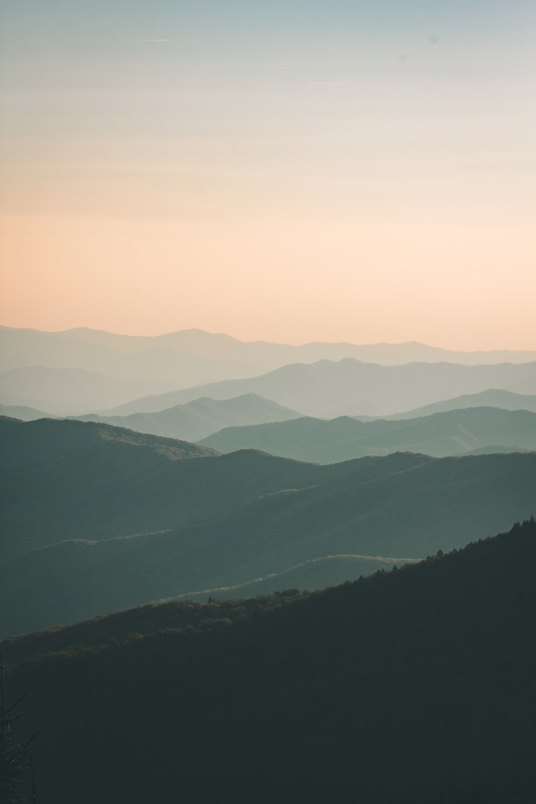
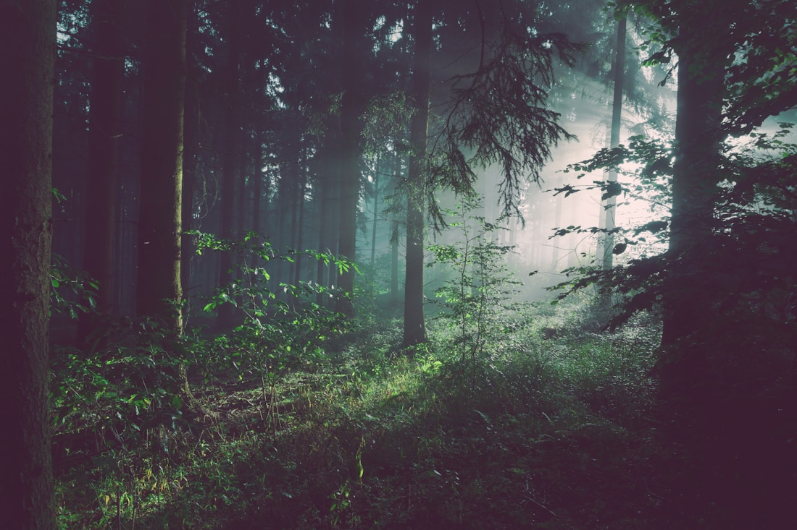
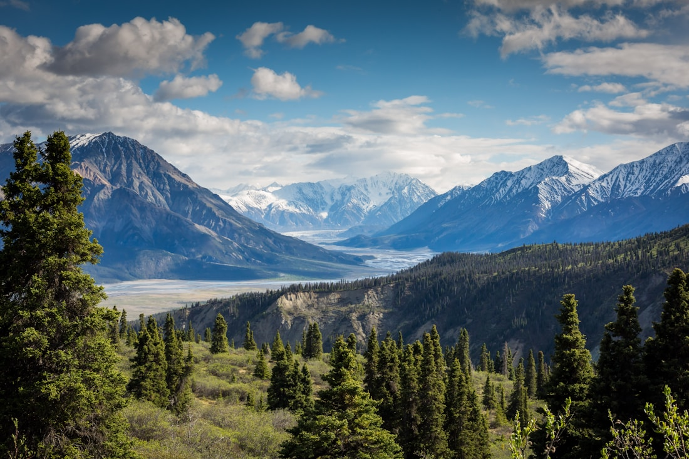
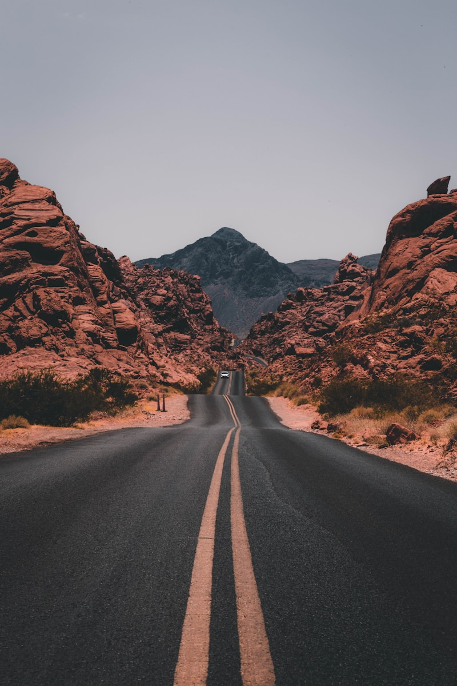

Verified Eco-Pass
Knuckles Mountain Eco Hike
A guided low-impact hiking experience through the Knuckles mountain range, designed for eco-conscious travellers who want scenic viewpoints, local guide support, and responsible trail practices.
Knuckles, Sri Lanka
Trip Overview
The Knuckles Mountain Eco Hike is designed for travellers who want to experience Sri Lanka's mountain landscapes responsibly. The journey includes guided trail walking, biodiversity observation, scenic viewpoints, and a local community stop while following low-impact travel practices.
What You'll Experience
Guided mountain trail walk
Native flora and fauna observation
Scenic viewpoint experience
Local village stop
Conservation-focused travel briefing
Sustainability Practices
Conservation Support
Part of each Eco-Pass supports trail conservation and biodiversity education.
Local Community Support
Local guides and village partners are included in the experience model.
Low-Impact Travel
Routes prioritize managed paths, small groups, and responsible visitor behavior.
Waste Reduction
Travellers receive refill and pack-in pack-out guidance before the hike.
What's Included
Included
- Certified local eco-guide
- Trail safety briefing
- Refillable water support
- Community stop
- Conservation contribution
- Digital Eco-Pass confirmation
Not included
- Personal hiking gear
- Meals unless selected
- Hotel pickup outside selected areas
Itinerary
- Meet local guide
- Begin trail walk
- Biodiversity observation stop
- Local village lunch stop
- Scenic viewpoint
- Return and experience summary
Reviews and Feedback
4.9/5 from 128 travellers
Amaya Perera 5.0A beautiful, responsible hiking experience. The local guide explained the landscape, conservation rules, and community impact clearly.
Daniel Fernando 4.8The trail was well managed, the views were excellent, and the sustainability information made the experience feel meaningful.
Priya N. 4.9Loved the low-impact approach and the local community stop. It felt more authentic than a normal tour.
Similar Eco Experiences
Sinharaja Rainforest Walk
Sinharaja, Sri Lanka
Sustainability Rating 4.8 LKR 12,500 View Details
Horton Plains Low-Impact Trail
Horton Plains, Sri Lanka
Sustainability Rating 4.6 LKR 14,500 View Details
Ella Eco-Lodge Stay
Ella, Sri Lanka
Sustainability Rating 4.7 LKR 22,000 View Details